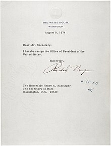

Watergate Skandalı: Amerikan Tarihindeki Unutulmaz İhanet
Watergate skandalı, Amerikan tarihinde derin izler bırakan ve siyasi skandallar arasında belki de en çok bilinen olaylardan biridir. Bu skandal, başlangıcından itibaren Amerikan halkını ve dünya kamuoyunu şaşkına çeviren bir dizi olayları kapsar. Richard Nixon’ın başkanlığının sarsılmasına yol açan bu skandal, Amerikan siyasi hayatında derin yaralar açmış ve şeffaflık ile denetimin öneminin anlaşılmasında kilit bir rol oynamıştır. Watergate skandalının analizine dair bu yazımızda, skandalın başlangıcından sonuçlarına kadar olan süreçte yaşanan önemli olayları, etkilerini ve Amerikan siyasetine olan uzun vadeli yansımalarını ele alacağız.
Watergate Skandalı’nın Başlangıcı ve Ana Olaylar
Watergate skandalı, 1972 yılında Amerikan tarihini derinden sarsan ve siyaset sahnesini altüst eden bir dizi olayın genel adıdır. Bu skandal, Başkan Richard Nixon’ın görev süresi boyunca ortaya çıkan, seçim kampanyası sırasında rakip Demokrat Parti’nin ulusal karargahının bulunduğu Watergate otelindeki ofislerine yapılan hırsızlık girişimi ile başladı. Ancak, bu olayın yüzeydeki basit suçlamalardan çok daha derin politik ve yasa dışı faaliyetleri kapsadığı kısa sürede anlaşıldı.
- Hırsızlık ve Gizli Dinleme: Watergate skandalının merkezinde, Nixon yönetiminin Demokratların seçim stratejilerini öğrenmek amacıyla yürüttüğü gizli dinleme ve casusluk faaliyetleri yatmaktadır.
- Kapak Operasyonu: Skandalın patlak vermesinin ardından, Nixon yönetimi suçu örtbas etme çabalarına girişti. Bu süreçte, hükümet kaynaklarının kötüye kullanılması ve adaletin engellenmesi gibi bir dizi yasadışı faaliyet gerçekleştirildi.
- Medyanın Rolü: Watergate skandalının ortaya çıkışında ve geniş kitlelere ulaşmasında medyanın, özellikle de Washington Post gazetesinin iki muhabiri Bob Woodward ve Carl Bernstein’ın derinlemesine araştırmaları büyük bir rol oynadı.
Watergate skandalı, Amerikan siyasi tarihindeki en büyük ihanetlerden biri olarak kabul edilmekte ve Nixon’ın istifasına yol açarak Amerikan halkının hükümete olan güvenini sarsmıştır. Bu olaylar silsilesi, “watergate skandalı” teriminin yalnızca bir hırsızlık vakası olarak değil, aynı zamanda bir güven krizi ve politik skandal olarak tarihe geçmesini sağlamıştır.
Skandalın Richard Nixon Üzerindeki Etkileri
Watergate skandalı, Amerikan tarihinde derin izler bırakırken, bu skandalın en büyük mağdurunun hiç şüphesiz 37. Amerika Birleşik Devletleri Başkanı Richard Nixon olduğunu söylemek yanlış olmaz. Watergate skandalı, Nixon’un başkanlık kariyerini büyük ölçüde etkiledi ve siyasi geleceğini kararttı.
Skandalın patlak vermesiyle birlikte Nixon’un itibarı ciddi şekilde zarar gördü. Kendisine yöneltilen suçlamalar ve halkın artan güvensizliği, Nixon’u 1974 yılında görevinden istifa etmeye zorladı. Watergate skandalı, Amerikan tarihinde istifa eden ilk ve tek başkan olmasına neden oldu. Nixon’un başkanlığı, halkın gözünde skandalın gölgesinde kalan ve güven kaybıyla sonuçlanan bir dönem olarak anılmaya başlandı.
Watergate Skandalı ve Siyasi Sonuçları
- Görevden İstifa: Watergate skandalı, Nixon’un başkanlık kariyerini sonlandıran ana faktördür.
- İtibar Kaybı: Skandal, Nixon’un kişisel ve profesyonel itibarının ciddi şekilde zedelenmesine yol açtı.
- Hukuki Süreçler: Skandal sonrasında Nixon’a yönelik hukuki süreçler başladı, ancak sonraki başkan Gerald Ford tarafından affedildi.
Bu dönem, Nixon için sadece siyasi bir son değil, aynı zamanda watergate skandalı ile özdeşleşen bir döneme imza atması açısından da büyük bir itibar kaybı oldu. Bu skandal, Amerikan siyasi tarihinde bir dönüm noktası olarak kabul edilirken, Nixon’un kişisel ve siyasi mirası üzerinde de kalıcı etkiler bıraktı.
Skandalın Amerikan Siyasi Hayatına Etkileri
Watergate skandalı, Amerikan siyasi sahnesinde derin ve kalıcı izler bıraktı. Bu olay, Amerikan halkının hükümete ve siyasi liderlere olan güvenini sarsarak, siyasi şeffaflığın ve hesap verilebilirliğin önemini bir kez daha gözler önüne serdi. Aşağıda, skandalın Amerikan siyasi hayatına etkileri üzerine kısa bir değerlendirme yer almaktadır:
- Güven Kaybı: Watergate skandalı, Amerikan halkının siyasi liderlere ve devlet kurumlarına olan inancını ciddi şekilde zedeledi. Bu güven kaybı, siyasi katılım ve kamusal diyalog üzerinde olumsuz etkiler yarattı.
- Siyasi Reformlar: Skandala yanıt olarak, bir dizi siyasi reform gerçekleştirildi. Seçim finansmanı, kampanya harcamaları ve siyasi şeffaflık konularında yeni düzenlemeler getirildi. Bu reformlar, gelecekteki siyasi skandalların önlenmesine yönelik önemli adımlar olarak değerlendirildi.
- Medyanın Rolü: Watergate skandalı, medyanın hükümet denetimindeki önemini ve gücünü gösterdi. Soruşturma sürecinde aktif rol alan gazeteciler, hükümetin hesap verilebilirliği konusunda kritik bir güç olarak öne çıktı. Bu olay, basın özgürlüğünün demokrasilerdeki hayati rolünü vurguladı.
Kısacası, Watergate skandalı, Amerikan siyasi hayatında şeffaflığın ve etik standartların önemini vurgulayan bir dönüm noktası oldu. Skandal, siyasi liderler ve kamu görevlileri için hesap verilebilirlik ve şeffaflığın güçlendirilmesi gerektiğinin altını çizdi. Bu olay, Amerikan siyasi tarihinde unutulmaz bir ihanet olarak hafızalarda yer edinse de, getirdiği dersler ve reformlar bugün dahi önemini korumaktadır.
Watergate Sonrası Şeffaflık ve Denetimde Artış
Watergate skandalı, Amerikan siyasi tarihinde derin yaralar açmış olmasına rağmen, yönetimde şeffaflık ve denetimin artırılması gibi önemli gelişmeleri de beraberinde getirmiştir. Bu dönemden sonra, hükümetin faaliyetlerine dair kamuoyu denetimi ve bilgi erişimi önemli ölçüde artmıştır.
- Kamuoyu Denetimi: Watergate skandalı sonrasında, hükümet üzerindeki kamuoyu denetiminin artırılması gerektiği yönünde güçlü bir fikir birliği oluştu. Bu, daha fazla saydamlık ve hesap verebilirlik anlamına geliyordu.
- Yasal Düzenlemeler: Scandal sonrası dönemde, birçok yasal düzenleme yapıldı. Örneğin, ‘Freedom of Information Act’ (Bilgi Edinme Hakkı Kanunu) daha işlevsel hale getirildi, bu da vatandaşların hükümet belgelerine erişimini kolaylaştırdı.
- Etki Alanının Genişlemesi: Watergate skandalının ortaya çıkardığı sorunlar, yalnızca federal hükümetle sınırlı kalmadı; yerel yönetimler de dâhil olmak üzere, tüm devlet kademelerinde şeffaflık ve denetim uygulamaları güçlendirildi.
Bu yenilikler, Watergate skandalının Amerikan demokrasisine ironik bir şekilde katkıda bulunduğunun bir göstergesidir. Watergate skandalı, hükümetin yurttaşlar karşısındaki sorumluluklarını yeniden tanımlamasına ve Amerikan siyasi hayatında önemli bir dönüşüm noktası olmasına yardımcı oldu. Bu sayede, hükümet faaliyetlerinin kamu gözü önünde daha şeffaf bir şekilde yürütülmesi sağlanmıştır.
Sıkça Sorulan Sorular
Watergate Skandalı nedir?

Watergate Skandalı, 1972 yılında Amerika Birleşik Devletleri’nde yaşanan ve Başkan Richard Nixon’ın istifasına yol açan siyasi bir skandaldır. Nixon yönetimi yetkililerinin, Demokratik Parti’nin ulusal karargâhı olan Watergate otel ve ofis kompleksine izinsiz giriş yapıp, dinleme cihazları yerleştirdiği ve rakip partiye ait bilgileri çaldığı ortaya çıkmıştır. Bu olay, Amerikan siyasi tarihindeki en büyük skandallardan biri olarak kayıtlara geçmiş ve geniş çapta bir hükümet gözetleme ve yolsuzluk soruşturmasını tetiklemiştir.
Watergate Skandalı’nın ortaya çıkışı ulusal bir krize yol açmış ve derin politik sonuçlar doğurmuştur. Olayın ardından yapılan soruşturmalar sonucunda birçok üst düzey yetkili suçlu bulunmuş ve hüküm giymiştir. Başkan Nixon, kendisine yönelik suçlamalardan kaçınmak ve azil süreci ile karşılaşmamak için 1974 yılında görevinden istifa etmiştir. Bu istifa, Amerika tarihinde bir başkanın görevi bırakma kararı alan ilk ve tek örneği olmuştur. Ayrıca, skandal hükümetteki güçlerin kötüye kullanımına karşı kamuoyunun duyarlılığını artırmış ve federal hükümetin daha şeffaf olması yönünde reformlar yapılmasını sağlamıştır.
Watergate sonrası Amerikan hükümeti hangi önlemleri almıştır?
Watergate Skandalı’nın ardından Amerikan hükümeti, siyasi şeffaflığı ve hesap verebilirliği artırmak için bir dizi yasal ve idari reform yapmıştır. Bunlar arasında, başkanın yetkilerinin sınırlandırılmasını içeren ve başkanlık kayıtlarının kamuya açık olmasını öngören Başkanlık Kayıtları Yasası (Presidential Records Act); hükümet tarafından gerçekleştirilen gözetlemeleri denetleyen Dış İstihbarat Gözetleme Mahkemesi’nin (Foreign Intelligence Surveillance Court) kurulması; ve seçim finansmanında şeffaflığı artıran Federal Seçim Kampanyası Yasası’nın (Federal Election Campaign Act) güçlendirilmesi yer almaktadır. Bu önlemler, hükümetin güvenilirliğini yeniden kazanma ve benzeri skandalların önlenmesi yolunda atılmış adımlardır.